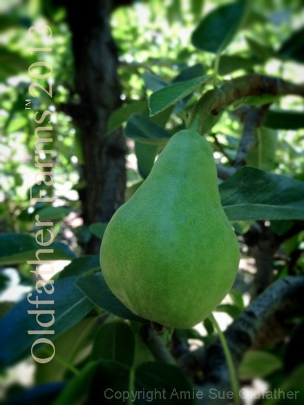

Maple Infused Coconut Crusted Apple Rings

~ raw, vegan, gluten-free, nut-free ~
We are purchasing a new refrigerator (yay!), and I felt compelled to empty out the old one and use up the contents. I know, I know… I can just transfer the goods from one fridge to the other, but I guess deep down I just wanted to get creative in the kitchen. Like I need an excuse?! hehe
And boy I am thankful that I made a batch of these because they became an excellent snack after our adventures today in the pear orchard. Our day started out on a motorcycle ride to town where we then sat on a curb to watch the local 4th of July parade. (right out of Mayberry) .
We then went to an organic u-pick-it farm and picked some golden raspberries. I always feel guilty when I go to those farms because just as many go in my tummy as do into the bucket! Ok, maybe not totally. I so did not eat 4 lbs of raspberries! For quality control though, one must taste test each new bush…. right? Someone, please back me up on this one.
We then came home because it was time to turn the water valve off that was feeding one orchard so we could turn on another to feed a different section. I slipped on my knee-high rubber boots because I knew that my feet were going to get wet as we tromped through the wet grass. Bob hollered over his shoulder, “You might get wet!”
Yea yea, I got my rubber boots on. The day was gorgeous, about 70 degrees with a sweet breeze that tousled my hair. Actually, turned it into a rat’s nest but I like the word tousled much better. :) Hand in hand we made our way down to the orchard. We turned off the valves and yep, our feet got wet. No worries.
We then made our way to the upper orchard and turned on the water valves. We then had to walk up and down each row to double-check all of the sprinklers to make sure that they were working. Two problems usually arise; they either get clogged up and need to have the sprinkler heads cleaned or they stick and don’t rotate. Bob made me a fancy tool out of a paperclip to use to clean the sprinkler nozzles.
Occasionally, I would get sprinkled upon as I bent over to clean out the heads, but it was actually refreshing. A few were really stubborn, and Bob told me to take the sprinkler head off to let the water clear the line. Easy peasy! I bent over one that was just dribbling water and unscrewed the head. SHOSH!!!!! A geyser of water plowed straight into my face, knocking my sunglasses right off. Lol So glad I had my waterproof boots on! ;) After a few more clogged sprinkler heads and a few more attempts to remove the heads to flush them out, I walked out of the orchard soaked from head to toe.
Bob and I met up and embraced, he kissed my forehead, and he told me that I was a sexy farm girl. I looked up at him and said, “Happy Farm of July, farm boy! All of this “hard” work, tuckered us out and we needed a snack! Maple Infused Coconut Crusted Apple Rings! I lost track of how many Bob ate. He claims it is one of his new favorite snacks now.
They are sweet, chewy, and rich in coconut. Yum! The quantities of each ingredient listed below are just basically a guideline. You may need a little more or less, depending on the size of apples that you use. My main bit of advice is to make sure that you don’t over-dehydrate them. I used maple syrup as my choice of sweetener but it isn’t raw, but it is less acidic on the body. You can easily use any liquid sweetener of your choice.

Ingredients: varies on apple size
- 2 organic apples
- 1 1/2 cup shredded coconut
- 1 cup maple syrup
Preparation:
- Wash and dry the apples. With a mandolin, slice the apples 1.5 mm thin. Place in a bowl.
- Place the coconut in a bowl all by itself.
- Place the maple syrup in a bowl all by itself.
- Prepare a dredging station as follows; starting from the left – bowl of apples, a bowl of maple syrup, a bowl of coconut, dehydrator tray with a mesh sheet in place.
- Dip an apple ring into the maple syrup, coating both sides. Tap off the excess on the edge of the bowl.
- Dip the maple coated apple into the shredded coconut, coating both sides. Lightly tap any excess off on the edge of the bowl.
- Place on the mesh dehydrator sheet. Proceed with each apple ring until gone.
- Dehydrate at 145 degrees F for 1 hour, then reduce the heat to 115 degrees F and continue drying for 5-6 hours.
- The trick is to remove them when they are dry to touch yet still a little flexible, so keep an eye on them, just in case your machine dries them faster.
- Allow to cool to room temp and place in an airtight container on the counter for up to 7-14 days.
Culinary Explanations:
- Why do I start the dehydrator at 145 degrees (F)? Click (here) to learn the reason behind this.
- When working with fresh ingredients, it is important to taste test as you build a recipe. Learn why (here).
- Don’t own a dehydrator? Learn how to use your oven (here). I do however truly believe that it is a worthwhile investment. Click (here) to learn what I use.
© AmieSue.com